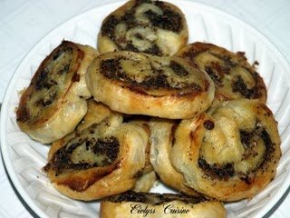

Palmiers et roulés feuilletés
Ingredients
×
- 1 rouleau de pâte feuilletée
- Saint Moret
- 3 tranches de jambon
- ciboulette
- 1 jaune d'œuf

Préparation
Étape 1
Étaler la garniture sur 1 rouleau de pâte feuilletée : Saint Moret, 3 tranches de jambon et ciboulette.
Étape 2
Rouler la pâte d’un côté jusqu’au milieu, puis l’autre côté (ou en une fois pour un roulé). Mouiller avec un peu d’eau pour coller les 2 rouleaux.
Étape 3
Badigeonner de 1 jaune d'œuf et trancher le rouleau.
Étape 4
Cuire un bon quart d’heure à 180ºC.
Conseils
- Autres garnitures : Saint Moret + saumon + ciboulette, Saint Moret + basilic, pesto.